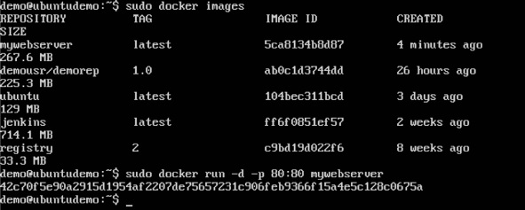

Setup a Webserver on Local Computer Using Docker
A webserver can be made by utilzing Docker
In the tutorial Apache Web Server on Ubuntu is used
Source: Building Web Server with Docker
- By using vim and the following commands, create the Docker File

- Execute Docker build command to make Docker file, which is sudo docker build –t=”mywebserver”
- Make a container from that image through the Docker run command: sudo docker run –d –p 80:80 mywebserver

- In the web browser, from Docker host the Apache is running can be seen